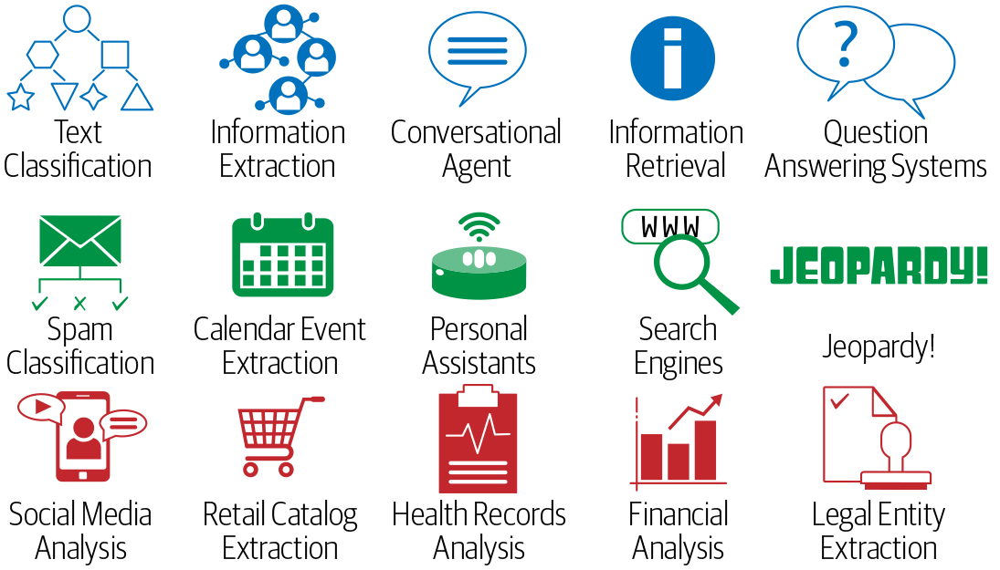
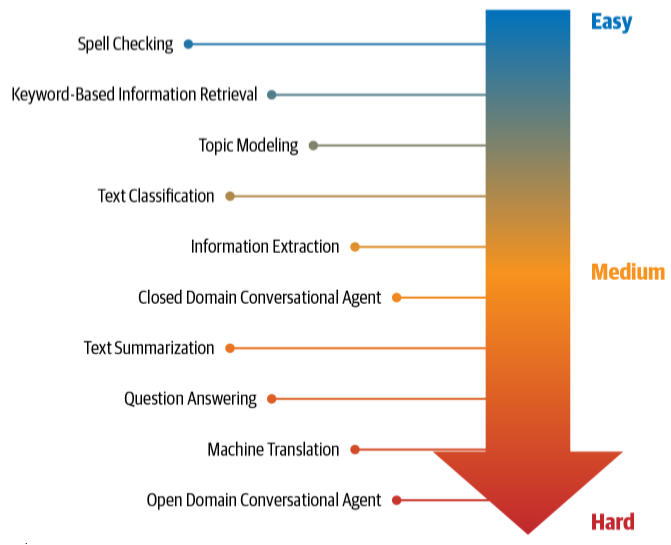
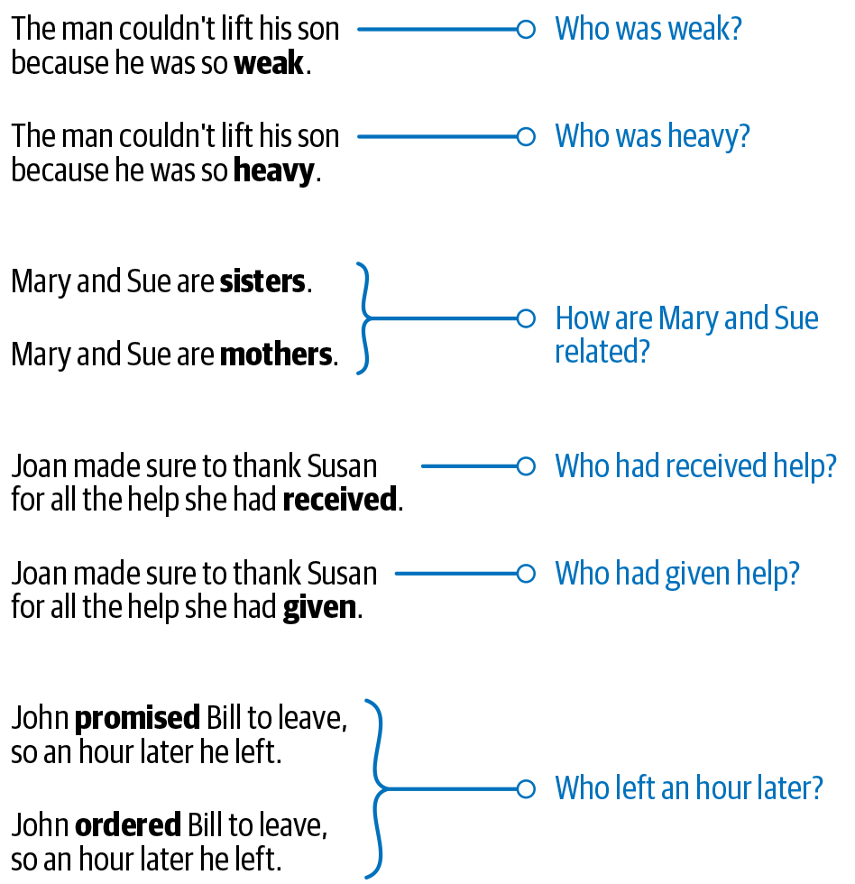

1.1 NLP in the Real World
What NLP is, the core tasks, and why human language is a hard input.
1. What NLP is
Natural language processing (NLP) is how we get a computer to work with human language: read it, write it, search it, translate it, or answer a question about it.
It sits between linguistics, computer science, and artificial intelligence. The input is messy text (or speech turned into text). The output is a label, a span, a ranking, another sentence, or a number.
This course is applied. The goal is to build systems that do a job, not to survey every theory of language.
The main text for the ideas this week is Practical Natural Language Processing (Vajjala, Majumder, Gupta, Surana).
2. Tasks you will see all semester
A small set of jobs shows up in almost every project:
| Task | What you ask the system to do |
|---|---|
| Language modeling | Predict the next word from the words so far |
| Text classification | Put a document into a known bucket (spam, topic, sentiment) |
| Information extraction | Pull out people, dates, events, or other fields |
| Information retrieval | Find documents that match a query |
| Conversational agent | Keep a dialogue going in ordinary language |
| Text summarization | Shorten a document and keep the point |
| Question answering | Answer a question written in English |
| Machine translation | Rewrite the text in another language |
| Topic modeling | Find themes in a large collection of documents |
Later weeks pick these up one at a time. Week 1 is the map.

3. Why the job is hard
Human language is not a clean table.
Ambiguity. The same string can mean more than one thing. I saw her duck is a bird or a movement. A model has to use context.
Common knowledge. Speakers leave facts unsaid. "The restaurant was packed, so we left" assumes you know what a packed restaurant is like. The text does not spell that out.
Creativity. Dialects, slang, sarcasm, and new coinages break rules you wrote last month.
Diversity across languages. There is no one-to-one map between vocabularies. A pipeline that works for English does not port by renaming a folder.


4. What this week is for
By the end of Week 1 you should be able to:
- name the core NLP tasks in the table above
- say why a rule-only system struggles
- write a short Python script that uses lists, dictionaries, functions, and files
Note 1.2 is how machine learning and deep learning sit next to those tasks. Note 1.3 is the Python you need for Lab 1.
5. Practice
-
Pick a product you use (search, mail, maps, a chatbot). Name two NLP tasks from the table that it is doing.
-
Write one English sentence that is ambiguous. Say the two readings.
-
Why would a perfectly good English spam filter do poorly on another language even if you translate the training labels?